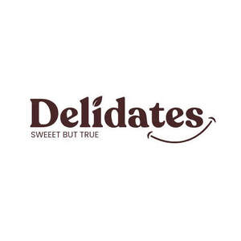

Trade Mark Journal No.2025/031 1 August 2025
UK00004236928 21 July 2025 (29,30,35)

- Class 29
- Cashew nut butter; Chocolate nut butter; Peanut butter; Almond butter; Coconut butter; Butter made of nuts; Nut and seed-based snack bars; Organic nut and seed-based snack bars; Peanut paste; Edible fat-based spreads for bread; Hazelnut spread; Hazelnut spreads; Peanut spread; Spreads consisting of hazelnut paste; Nut-based spreads; Nut paste spreads; Fruit spread; Dates; Dried dates; Processed dates; Dates, processed; Fruit jelly spreads; Spreads consisting mainly of fruits.
- Class 30
- Chocolate spread; Chocolate spreads; Chocolate spreads containing nuts; Chocolate spreads for use on bread; Chocolate-based spreads; Cocoa based creams in the form of spreads; Chocolate coated marshmallow biscuits containing toffee; Chocolate coated macadamia nuts; Chocolate bark containing ground coffee beans; Chocolate confectionery having a praline flavour; Peanut butter confectionery chips; Salted butter caramel; Chocolate covered biscuits; Chocolate covered wafer biscuits; Caramel coated popcorn with candied nuts; Chocolate drink preparations flavoured with mocha; Chocolate drink preparations flavoured with toffee; Oat clusters containing dried fruit; Chocolate marzipan; Chocolate covered cakes; Chocolate coated nuts; Dairy-free chocolate; Chocolate pastries; Chocolate coated biscuits; Chocolate coated nougat bars; Chocolate; Chocolate caramel wafers; Chocolate fudge; Almonds covered in chocolate; Chocolate brownies; Milk chocolate; Chocolate coffee; Milk chocolate teacakes; Chocolate biscuits; Chocolate syrup; Chocolate confectionery; Chocolate confections; Chocolate desserts; Chocolate sauce; Chocolate waffles; Milk chocolate bars; Chocolate sweets; Chocolate confectionary; Chocolate fondue; Dairy chocolate; Chocolate syrups; Chocolate creams; Mousses (Chocolate -); Chocolate mousses; Chocolate covered pretzels; Chocolate candy with fillings; Chocolate sauces; Chocolate chips; Chocolate drink preparations flavoured with banana; Chocolate wafers; Chocolate eggs; Pralines made of chocolate; Chocolate powder; Chocolate drink preparations flavoured with nuts; Chocolate coated fruits; Chocolate flavourings; Chocolate shells; Chocolate bars; Filled chocolate; Waffles with a chocolate coating; Chocolate drink preparations flavoured with mint; Chocolate pastes; Hot chocolate; Caramel; Imitation chocolate; Filled chocolate bars.
- Class 35
- Distribution of printed promotional material by post; Distribution of publicity materials (flyers, prospectuses, brochures, samples, particularly for catalogue long distance sales) whether cross border or not; Dissemination of advertising matter by mail; Business management services relating to electronic commerce; Organisation of exhibitions for business or commerce; Provision of information relating to commerce; Retail purposes (Presentation of goods on communication media, for -); Presentation of goods on communication media, for retail purposes; Communication media (Presentation of goods on -), for retail purposes; Presentation of goods on communications media, for retail purposes; Dissemination of advertising via online communications networks; Provision of an on-line marketplace for buyers and sellers of goods and services; Organization of trade fairs for commercial or advertising purposes; Trade fairs (Organization of -) for commercial or advertising purposes; Provision of advertising space on electronic media; Provision of an online marketplace for buyers and sellers of goods and services; Advertising by transmission of on-line publicity for third parties through electronic communications networks; Provision of advertising space by electronic means and global information networks; Provision of space on web-sites for advertising goods and services; Advertising services relating to the marine and maritime industry; Advertising services for the promotion of e-commerce; Promoting the goods and services of others via computer and communication networks; Direct mail advertising services; Organisation of trade fairs for advertising purposes; Advertising automobiles for sale by means of the Internet; Dissemination of advertising for others via an on-line communications network on the internet; Goods import-export agencies; On-line advertising on computer communication networks; Organisation of trade fairs for commercial or advertising purposes; Demonstration of goods and services by electronic means, also for the benefit of the so-called teleshopping and homeshopping services; Provision of business information via global computer networks; Provision of space on websites for advertising goods and services; Advertising services relating to the transport industries; Advertising via electronic media and specifically the internet; Advertising services relating to the provision of business; Retail services via global computer networks related to foodstuffs; On-line advertising via a computer communications network; Business advertising services relating to franchising; Online advertising via a computer communications network; Organization of exhibitions and trade fairs for commercial or advertising purposes; Advertising services relating to the sale of goods; Auctioneering services relating to agriculture; Business administration services for processing sales made on the internet; Business administration services for the processing of sales made on the Internet; Advertising services relating to the travel industries; Mail order retail services for cosmetics; Foreign trade information (Services for the provision of -); Services for provision of foreign trade information; Provision of business information relating to the agricultural industry; Business administration services in the field of transportation; Advertising services relating to perfumery; Wholesale services in relation to chemicals for use in agriculture; Direct mail advertising.
AROHA TRADE LTD